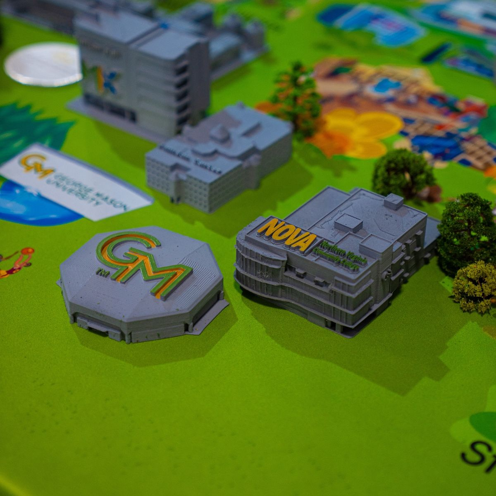
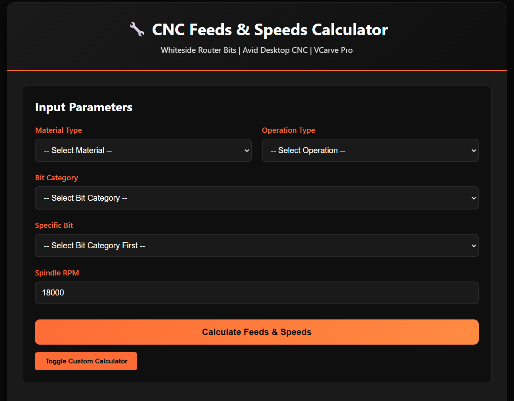
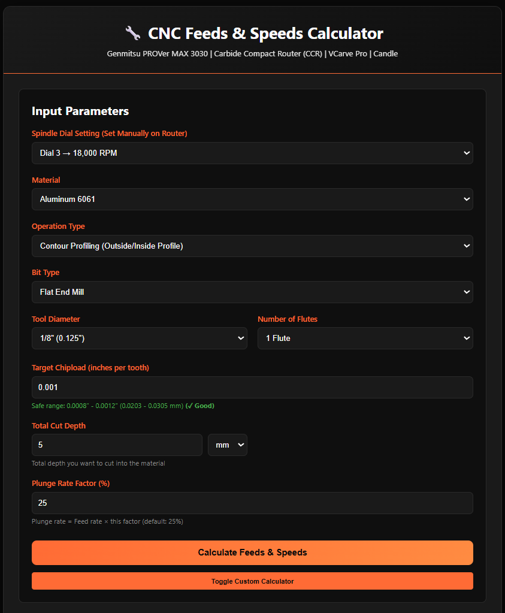
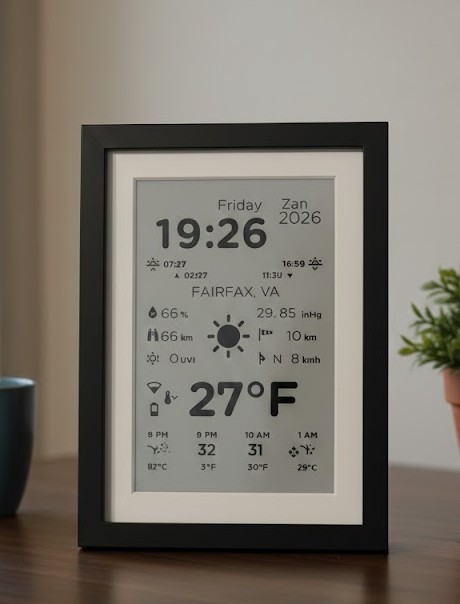
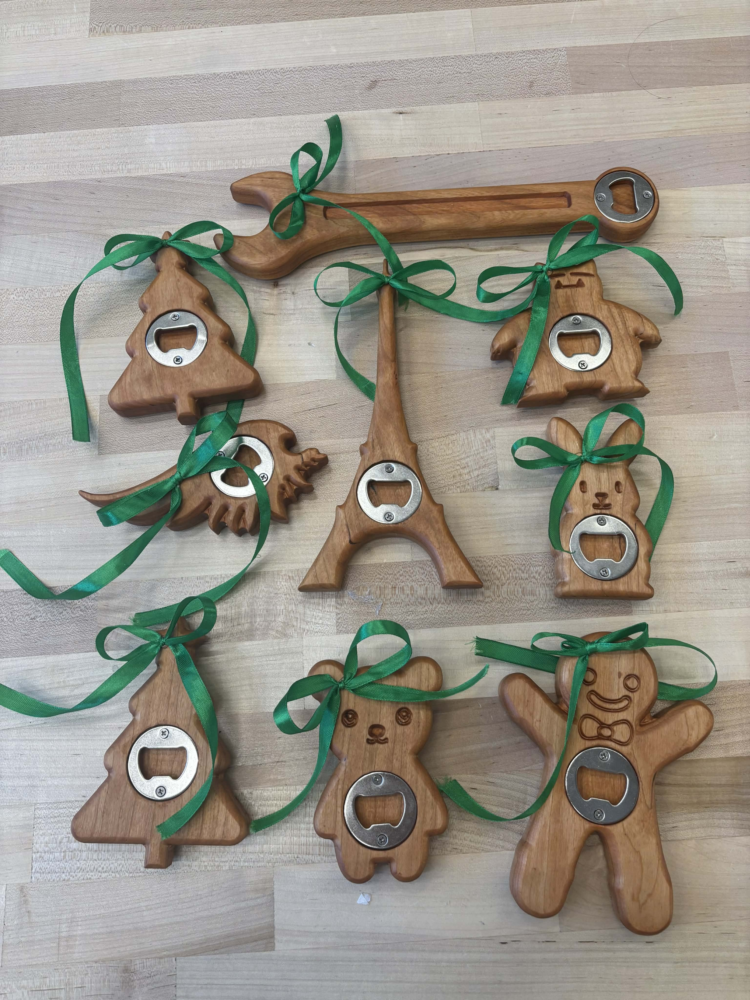
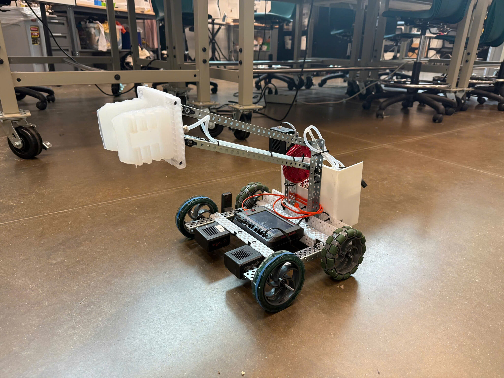
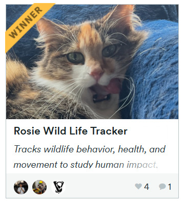
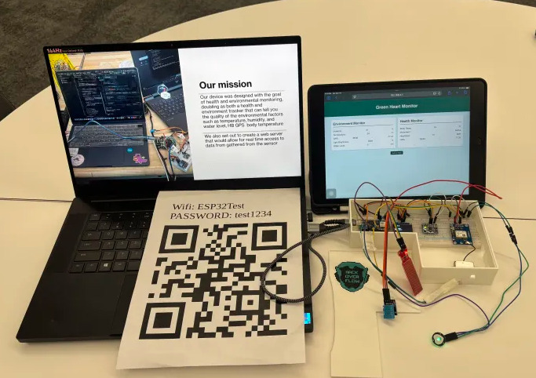

Portfolio
A selection of work spanning fabrication, electronics, and software tools.


Web-based calculator for optimal feeds and speeds on wood CNC machines at the MIX Fab Lab.

Custom metal CNC calculator for various alloys and tooling, built for the MIX at GMU.

7.5" e-paper screen with ESP32 showing live weather data. Solved V2 hardware ghosting issues.

Cherry wood bottle opener with walnut inlay, showcasing precision CNC machining and hardwood techniques.

International collaboration — pneumatic soft gripper for medical and agricultural use. Senior capstone project.

3rd Place — GMU Hackfax 2025. Compact wildlife tracker with GPS, accelerometer, and heart rate monitoring.

Winner — GMU HackOverflow 2025 Beginner's Track. Portable IoT device for environmental and health monitoring.